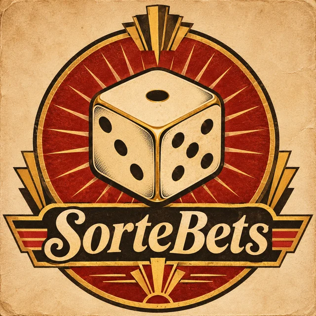

Bônus de boas-vindasGanhe 200 fichas grátis
Crie sua conta em 10 segundos e comece a girar. Faça 5 pontos e vença a máquina!
- Cadastro rápido, só o seu nome
- Bônus liberado na hora
- Três símbolos iguais valem 1 ponto
Fichas fictícias. Nenhum dinheiro real. Espaço também gira.
Acabaram as fichas
O que fez você acreditar que venceria?
Por que ninguém chega a 5
Ninguém jogou ainda. Faça o cadastro e jogue para ver seus números aqui.
É só um jogo... mas a máquina sabe mais do que você.
Seus pontos, giro a giro
- Seus pontos
- Meta de 5 (bloqueada)
- "Faltou só um"
Registro do diretor
Cada giro foi decidido no clique, antes de os rolos girarem. Aqui está a decisão e o motivo.
| Giro | Fase | Resultado na linha | Regra aplicada | Chance real |
|---|
Ainda não há giros registrados.
Semente do gerador desta partida: —
As duas camadas da máquina
O acaso, já viciado
Um gerador de números (xoshiro128**) sorteia onde cada rolo para. Cada rolo tem 22 posições, mas elas não pesam igual: o rolo virtual tem 64 casas.
O dado aparece no rolo, mas ocupa 1 casa em 64. Os vazios colados nele ocupam até 7. Por isso ele vive passando raspando.
O diretor, que decide antes
Antes da animação, o diretor olha seus pontos e escolhe o resultado. Depois procura nos rolos uma parada real que mostre exatamente isso.
- Começo fácil. No primeiro ponto, 1 em cada 2 giros paga. No acaso puro seria menos de 1 em 250. A chance vai caindo a cada ponto (50%, 40%, 30%, 25%) para parecer que ficou difícil por mérito seu.
- Seca máxima. Abaixo do seu teto, a máquina nunca deixa você passar mais de 3 giros sem ponto: o 4º é garantido. Assim ninguém desanima antes de chegar na trava.
- Teto sorteado no cadastro. Antes do primeiro giro, a máquina já decidiu até onde você vai: 4 pontos para só 3% dos jogadores; os outros param em 3, 2 ou 1. Quem foi mais longe não jogou melhor: só recebeu um teto maior.
- Trava no teto. Ao chegar no seu teto, a chance de ponto vira
0%. Não importa quantas fichas você tenha. - "Faltou só um" fabricado. Na trava, a maioria dos giros põe dois símbolos na linha e o terceiro parado logo acima ou abaixo. O último rolo gira mais devagar para criar suspense.
- Tudo decidido no clique. O resultado sai de
Motor.decidir()antes de os rolos girarem. A animação só obedece. - Sons que comemoram. A máquina toca fanfarra, moedas e prato no ponto, e faz festa até no "quase". Quando você perde, quase não faz barulho. E quando você chega no 4, a música acelera e ganha trompete. Perder fica silencioso; quase ganhar parece ganhar.
- Cadastro com bônus. Você entregou seu nome em troca de "fichas grátis". Os sites de aposta fazem igual, pedindo ainda e-mail, CPF e telefone: o bônus é a isca e seus dados viram propaganda para você voltar.
Teste com mil jogadores
O computador joga 1.000 partidas completas (200 fichas cada) nas duas versões da máquina e compara.
- SorteBets (com diretor)
- Acaso puro (mesmos rolos)
Ver o código do diretor
function decidir(rng, partida) {
// partida.teto foi sorteado no cadastro: 4, 3, 2 ou 1
const travado = partida.pontos >= partida.teto; // chegou no teto?
const sorteio = rng.real(); // número entre 0 e 1
let chance = [0.50, 0.40, 0.30, 0.25][partida.pontos]; // ISCA que esfria
if (partida.seca >= 3) chance = 1; // SECA MÁXIMA: ponto garantido
if (travado) chance = 0; // TRAVA: daqui não passa
if (sorteio < chance) return ponto(); // libera o trio
if (sorteio < (travado ? 0.75 : ...)) // QUASE FABRICADO
return doisNaLinha_terceiroRaspando();
return derrota();
}Código completo em js/motor.js, com comentários.
Para conversar
- Em que momento você achou que ia ganhar?
- Se fosse dinheiro de verdade, você teria recarregado?
- Por que a máquina deixa a gente ganhar no começo?
Quem venceu a máquina?
Jogadores: 0 Venceram: 0
| # | Nome | Pontos máx. | Rodadas | Na trava | "Faltou só um" | Fichas gastas | Remover |
|---|
Ninguém jogou ainda.
O placar fica salvo só neste navegador.